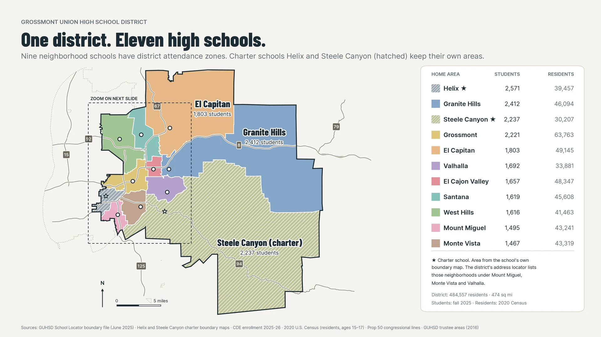
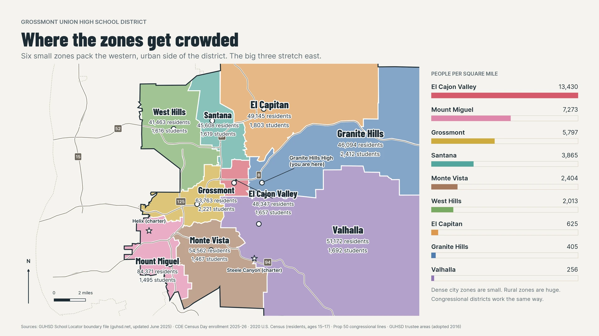
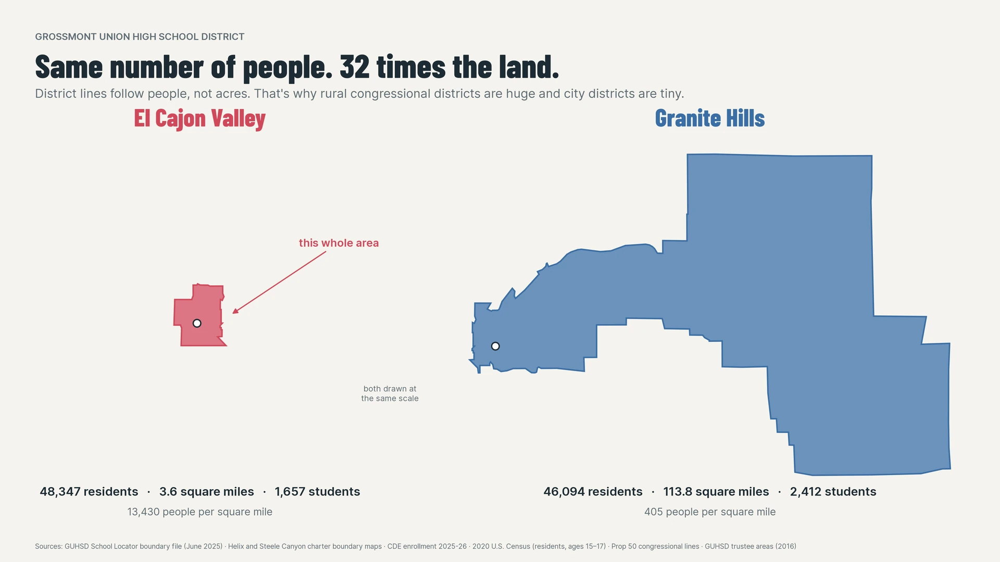
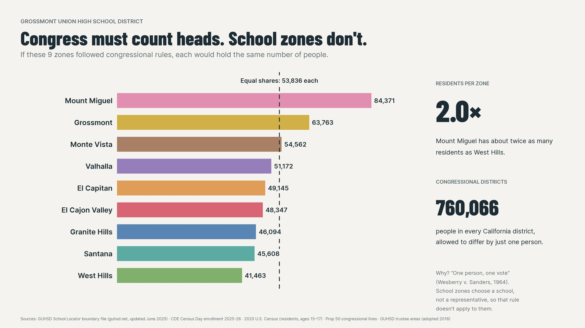
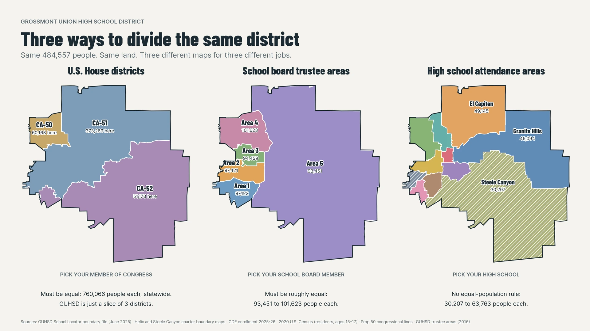
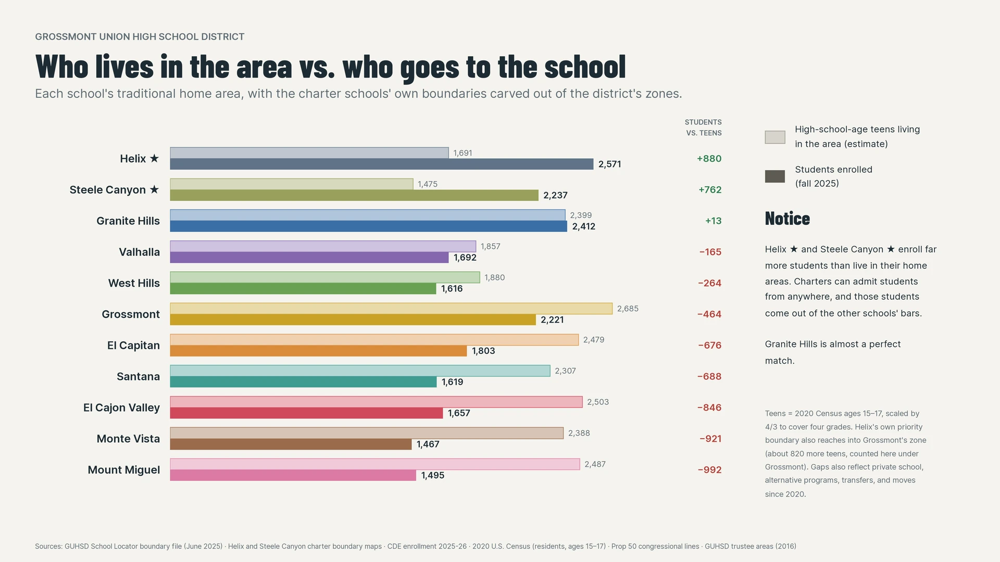
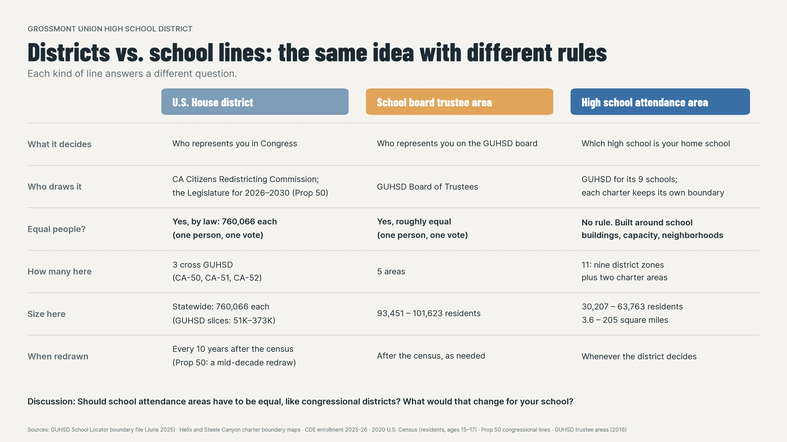

Intel file // Grossmont Union High School District
Your district,
divided three ways.
Congressional districts, school board areas, and high school attendance zones all carve up the same neighborhoods. Two of those maps have to be equal in population. One doesn't. Here's why, with the real lines and real numbers.
Residents484,557
Students (fall 2025)22,002
Attendance zones9
Square miles474
Download the slides
PowerPoint, 7 slides, 3.5 MB · speaker notes with talking points and sources included.
One district. Nine attendance zones.
Every home in the Grossmont Union High School District is zoned for one of nine neighborhood high schools. These are the district's own lines. Two charter schools, Helix and Steele Canyon, have no zone; students apply to attend them.

Ask: Which zone do you live in? Is it the school you attend?
Where the zones get crowded
El Cajon Valley's whole zone is 3.6 square miles but holds 48,347 people, about 13,430 per square mile. Valhalla's zone has 256 per square mile.

Ask: Why would a city zone be so much smaller than a rural one?
Same number of people. 55 times the land.
Drawn at the same scale: El Cajon Valley has 48,347 residents in 3.6 sq mi; Valhalla has 51,172 in 200.2 sq mi. Congressional maps look like this too, because lines follow people, not land.

Ask: Looking only at the map, which zone would you guess has more people?
Congress must count heads. School zones don't.
If these zones followed congressional rules, each would hold about 53,836 people. Instead they range from 41,463 to 84,371. Every California congressional district must have 760,066 people (one person, one vote).

Ask: Is it a problem that one zone has twice the people of another? Who could that affect?
Three ways to divide the same district
Congressional districts and school board trustee areas elect people, so both must be equal in population. Attendance zones only assign a school, so no equal-population rule applies.

Ask: Why do the two maps that elect people have to be equal, but the school map doesn't?
Who lives in the zone vs. who goes to the school
Light bars estimate the high-school-age teens living in each zone; dark bars show students actually enrolled. Helix sits inside the Mount Miguel zone and Steele Canyon inside the Valhalla zone, and both draw thousands of students.

Ask: If you can choose a different school, does the zone line still matter?
Districts vs. zones: the same idea, different rules
Who draws each kind of line, what it decides, and whether it has to be equal.

Ask: Should attendance zones have to be equal, like congressional districts? What would that change for your school?
Sources: zone lines from the GUHSD School Locator boundary file (guhsd.net, updated June 2025); enrollment from the California Department of Education, Census Day 2025-26; residents and ages 15–17 from the 2020 U.S. Census, counted by block; congressional lines are the Prop 50 map used from 2026; trustee areas are GUHSD's map adopted in 2016. The 760,066 figure is the California Citizens Redistricting Commission's ideal district population. Teen counts on slide 6 are estimates. More on how this site checks its facts. Checked 2026-11-19.